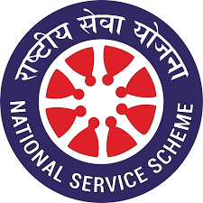

National Service Scheme

- Any student enrolled as an NSS Volunteer should put in at least 120 hours of social work in a year for a continuous period of two years i.e.240 hours in two years, for different programmes other than special camping.
- They should participate wholeheartedly in the programmes and should be fully conversant with the objectives of NSS.
- Out of the 120 hours of service which each student volunteer is expected to put in a year, at least 20 hours should be utilised in the first year for pre-placement orientation programme in the following manner: